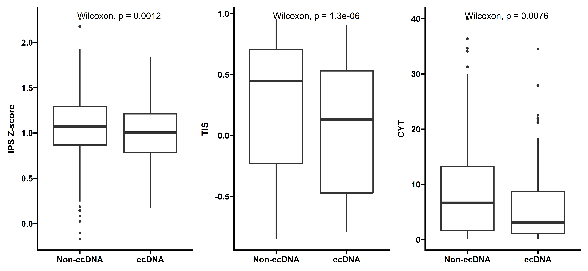

Extrachromosomal DNA is associated with decreased immune cell infiltration and antigen presentation, represents a potential cancer immune evasion mechanism
library(dplyr)
library(ggplot2)
library(tidyr)
library(ggpubr)
library(NeoEnrichment)
library(ggprism)
library(cowplot)
library(patchwork)
library(reshape2)
library(stringr)Sample Distribution
EcDNA status information was determined using AmpliconArchitect from WGS data as described previously (Kim et al., 2020). Gene expression data are available for the majority of TCGA but not PCAWG datasets. So for downstream immune infiltration and gene expression analysis, we only keep TCGA samples.
We first look at the ecDNA status distribution of samples:
##keep TCGA samples
dt <- readxl::read_xlsx("../data/Extrachromosomal DNA is associated with oncogene amplification and poor outcome across multiple cancers.xlsx",sheet = 3) %>%
filter(tumor_or_normal!="normal") %>%
filter(grepl("TCGA",sample_barcode)) %>%
group_by(sample_barcode) %>%
summarise(ecDNA=ifelse(any(sample_classification=="Circular"),"yes","no"))
dt$cancer <- get_cancer_type(dt$sample_barcode)
dt %>% group_by(cancer) %>%
summarise(total_sample=n(),
ecDNA_postive=sum(ecDNA=="yes")) %>% arrange(desc(total_sample)) %>%
pivot_longer(cols = c("total_sample","ecDNA_postive"),
names_to = "type",
values_to = "counts") -> summ
summ$cancer <- factor(summ$cancer,levels = unique(summ$cancer))
ggplot(data=summ,aes(x=cancer,y=counts,fill=type))+
geom_bar(stat="identity",position = "dodge")+
theme_prism()+
theme(axis.text.x = element_text(angle = 45,vjust = 1, hjust = 1))+
theme(axis.title.x = element_blank())And when combined with RNA expression data:
tpm_gene_log2 <- readRDS("../../tmp/tpm_gene_log2.rds")
dt_exp <- dt %>% filter(sample_barcode %in% colnames(tpm_gene_log2))
dt_exp %>% group_by(cancer) %>%
summarise(total_sample=n(),
ecDNA_postive=sum(ecDNA=="yes")) %>%
arrange(desc(total_sample)) %>%
pivot_longer(cols = c("total_sample","ecDNA_postive"),
names_to = "type",
values_to = "counts") -> summ
summ$cancer <- factor(summ$cancer,levels = unique(summ$cancer))
ggplot(data=summ,aes(x=cancer,y=counts,fill=type))+
geom_bar(stat="identity",position = "dodge")+
theme_prism()+
theme(axis.text.x = element_text(angle = 45,vjust = 1, hjust = 1))+
theme(axis.title.x = element_blank())Immune cell infiltration status
We used various methods to compare immune infiltration status between samples with and without ecDNA. We first check the total immune infiltration levels quantified by ESTIMATE, Xcell immune score and Leukocyte fraction.
##ESTIMATE
pancancer_estimate_score <- readRDS("../data/pancancer_estimate_score.rds")
dt_immune1 <- inner_join(
dt %>% rename(sample=sample_barcode),
pancancer_estimate_score)
dt_immune1 %>% group_by(cancer) %>% summarise(c=sum(ecDNA=="yes")) %>%
filter(c>20)-> summ
dt_immune1 <- dt_immune1 %>%
filter(cancer %in% summ$cancer)###MCPcounter cytotoxicity score and Xcell immune score
immune <- data.table::fread("../data/infiltration_estimation_for_tcga.csv") %>%
rename(sample=cell_type) %>%
select(sample,`cytotoxicity score_MCPCOUNTER`,`immune score_XCELL`)
dt_immune2 <- inner_join(
dt %>% rename(sample=sample_barcode),
immune)
dt_immune2 %>% group_by(cancer) %>%
summarise(c=sum(ecDNA=="yes"),a_c=n(),per=c/a_c) %>%
filter(c>20)-> summ
dt_immune2 <- dt_immune2 %>%
filter(cancer %in% summ$cancer)##Leukocyte fraction
immune_landscape <- readRDS("../data/immune_landscape.rds")
dt_immune3 <- inner_join(
dt %>% rename(sample=sample_barcode) %>%
mutate(sample = substr(sample,1,12)),
immune_landscape %>%
select(`TCGA Participant Barcode`,`Immune Subtype`,`Leukocyte Fraction`,`Intratumor Heterogeneity`) %>%
rename(sample=`TCGA Participant Barcode`)
) %>% filter(!is.na(`Leukocyte Fraction`))
dt_immune3 %>% group_by(cancer) %>%
summarise(c=sum(ecDNA=="yes"),a_c=n(),per=c/a_c) %>%
filter(c>20)-> summ
dt_immune3 <- dt_immune3 %>%
filter(cancer %in% summ$cancer)p1 <- ggplot(data=dt_immune1,aes(x=ecDNA,y=ImmuneScore))+
geom_boxplot(size=1)+
stat_compare_means(label.x=1.2,size=5)+
theme_prism()+
labs(y="ImmuneScore (Estimate)")+
scale_x_discrete(labels=c("Non-ecDNA","ecDNA"))+
theme(axis.title.x = element_blank())
p2 <- ggplot(data=dt_immune2,aes(x=ecDNA,y=log(`cytotoxicity score_MCPCOUNTER`+1)))+
geom_boxplot(size=1)+
stat_compare_means(label.x=1.2,size=5)+
theme_prism()+
labs(y="Cytotoxicity score (MCPCOUNTER)")+
scale_x_discrete(labels=c("Non-ecDNA","ecDNA"))+
theme(axis.title.x = element_blank())
p3 <- ggplot(data=dt_immune2,aes(x=ecDNA,y=`immune score_XCELL`))+
geom_boxplot(size=1)+
stat_compare_means(label.x=1.2,size=5)+
theme_prism()+
labs(y="Immune score (XCELL)")+
scale_x_discrete(labels=c("Non-ecDNA","ecDNA"))+
theme(axis.title.x = element_blank())
p4 <- ggplot(data=dt_immune3,aes(x=ecDNA,y=`Leukocyte Fraction`))+
geom_boxplot(size=1)+
stat_compare_means(label.x=1.2,size=5)+
theme_prism()+
scale_x_discrete(labels=c("Non-ecDNA","ecDNA"))+
theme(axis.title.x = element_blank())
p1 + p3 + p4 + p2+ plot_layout(ncol = 2,nrow=2)With different methods, tumors with ecDNA consistently show significantly decreased immune scores.
We also calculated other infiltration scores including IPS Z-score, CYT and TIS:
IPS <- readRDS("../data/IPS.rds")
dt_IPS <- inner_join(
dt %>% rename(sample=sample_barcode),
IPS)
dt_IPS %>% group_by(cancer) %>% summarise(c=sum(ecDNA=="yes")) %>%
filter(c>20)-> summ
dt_IPS <- dt_IPS %>%
filter(cancer %in% summ$cancer)
p5 <- ggplot(data=dt_IPS,aes(x=ecDNA,y=AZ))+
geom_boxplot(size=1)+
stat_compare_means(label.x=1.2,size=5)+
theme_prism()+
scale_x_discrete(labels=c("Non-ecDNA","ecDNA"))+
theme(axis.title.x = element_blank())+
labs(y="IPS Z-score")
tis <- read.table("../data/tis_signature.txt")
tis$sample <- rownames(tis)
dt_tis <- inner_join(
dt %>% rename(sample=sample_barcode),
tis)
dt_tis %>% group_by(cancer) %>% summarise(c=sum(ecDNA=="yes")) %>%
filter(c>20)-> summ
dt_tis <- dt_tis %>%
filter(cancer %in% summ$cancer)
p6 <- ggplot(data=dt_tis,aes(x=ecDNA,y=V1))+
geom_boxplot(size=1)+
stat_compare_means(label.x=1.2,size=5)+
theme_prism()+
scale_x_discrete(labels=c("Non-ecDNA","ecDNA"))+
theme(axis.title.x = element_blank())+
labs(y="TIS")
cyts <- readRDS("../data/cyts.rds")
dt_cyts <- inner_join(
dt %>% rename(sample=sample_barcode),
cyts)
dt_cyts %>% group_by(cancer) %>% summarise(c=sum(ecDNA=="yes")) %>%
filter(c>20)-> summ
dt_cyts <- dt_cyts %>%
filter(cancer %in% summ$cancer)
p7 <- ggplot(data=dt_cyts,aes(x=ecDNA,y=cyts))+
geom_boxplot(size=1)+
stat_compare_means(label.x=1.2,size=5)+
theme_prism()+
scale_x_discrete(labels=c("Non-ecDNA","ecDNA"))+
theme(axis.title.x = element_blank())+
labs(y="CYT")
p5 + p6 + p7
Then we look close into the difference of different immune cell types between samples with and without ecDNA using above methods:
load("../data/ecDNA.Rdata")
immune_data <- read.table("../data/infiltration_estimation_for_tcga.csv",header = T,sep = ",")
ecDNA_tcga <- ecData3 %>% filter(sample_type %in% c("TM","TP")) %>%
filter(grepl("^TCGA.",sample_barcode)) %>%
mutate(ecDNA=ifelse(sample_classification=="Circular","ecDNA","Non-ecDNA")) %>%
mutate(tcga_id=get_cancer_type(sample_barcode))
ecDNA_imm_info <- ecDNA_tcga %>% filter(sample_barcode %in% immune_data$cell_type)
ecDNA_imm_info %>% group_by(tcga_id) %>%
summarise(.,ecDNA=sum(ifelse(ecDNA=="ecDNA",1,0))) %>%
filter(ecDNA>20) -> ecDNA_20_info
heat_data <- ecDNA_tcga %>% filter(tcga_id %in% ecDNA_20_info$tcga_id)
##Heatmap
tumor_type <- ecDNA_20_info$tcga_id
heatmap_imm <- function(heat_data2,cell_names){
if (length(cell_names>0)) {
heat_data2 <- heat_data2[,-which(colnames(heat_data2) %in% cell_names)]
}
imm_ecDNA <- heat_data2[which(heat_data2$ecDNA=="ecDNA"),]
imm_NonecDNA <- heat_data2[which(heat_data2$ecDNA=="Non-ecDNA"),]
heat_fig <- matrix(NA, ncol = length(9:length(heat_data2)), nrow = 8)
rownames(heat_fig) <- c("Pan-cancer",tumor_type)
colnames(heat_fig) <- colnames(heat_data2)[9:length(heat_data2)]
cell_type <- colnames(heat_data2)[9:length(heat_data2)]
for (i in tumor_type) {
for (ii in cell_type) {
data1 <- median(imm_ecDNA[which(imm_ecDNA$tcga_id==i),][,ii])
data2 <- median(imm_NonecDNA[which(imm_NonecDNA$tcga_id==i),][,ii])
heat_fig[i,ii] <- log(data1+1.001) / log(data2+1.001)
}
}
for (ii in cell_type) {
data1 <- median(imm_ecDNA[,ii])
data2 <- median(imm_NonecDNA[,ii])
heat_fig["Pan-cancer",ii] <- log(data1+1.001) / log(data2+1.001)
}
heat_fig2 <- heat_fig
heat_fig2 <- t(heat_fig2)
return(heat_fig2)
}
library(grid)
library(circlize)
col_fun = colorRamp2(c(0.34, 1, 3), c("blue", "white", "red"))
##CibersortABS
CiberABS <- immune_data[,c(1,grep("*CIBERSORT.ABS$",colnames(immune_data)))]
colnames(CiberABS)[1] <- "sample_barcode"
heat_data2 <- merge(heat_data,CiberABS)
heat_data2$CD8_Treg._CIBERSORT.ABS <- log(heat_data2[,"T.cell.CD8._CIBERSORT.ABS"]+1.001)/log(heat_data2[,"T.cell.regulatory..Tregs._CIBERSORT.ABS"]+1.001)
heat_data2$M1_M2._CIBERSORT.ABS <- log(heat_data2[,"Macrophage.M1_CIBERSORT.ABS"]+1.001)/log(heat_data2[,"Macrophage.M2_CIBERSORT.ABS"]+1.001)
cell_names <- c("B.cell.naive_CIBERSORT.ABS","T.cell.CD4..memory.resting_CIBERSORT.ABS",
"T.cell.follicular.helper_CIBERSORT.ABS","NK.cell.resting_CIBERSORT.ABS",
"Macrophage.M0_CIBERSORT.ABS","Myeloid.dendritic.cell.resting_CIBERSORT.ABS",
"Myeloid.dendritic.cell.activated_CIBERSORT.ABS","Mast.cell.resting_CIBERSORT.ABS",
"Neutrophil_CIBERSORT.ABS","T.cell.CD4..naive_CIBERSORT.ABS",
"Eosinophil_CIBERSORT.ABS")
heat_fig2 <- heatmap_imm(heat_data2,cell_names)
rownames(heat_fig2) <- c("B cell memory","B cell plasma","T cell CD8","T cell CD4 memory activated",
"T cell regulatory Tregs","T cell gamma delta","NK cell activated","Monocyte",
"Macrophage M1","Macrophage M2","Mast cell activated","CD8/Tregs","M1/M2")
heatmap_cibersortABS <- ComplexHeatmap::Heatmap(heat_fig2,cluster_rows = F,cluster_columns = F,name = " ",
row_title = "Cibersort",col = col_fun,
row_names_side = "right",column_names_rot = 45,column_names_gp = gpar(fontsize = 12),
row_names_gp = gpar(fontsize = 12))
##Timer
CiberABS <- immune_data[,c(1,grep("*_TIMER$",colnames(immune_data)))]
colnames(CiberABS)[1] <- "sample_barcode"
heat_data2 <- merge(heat_data,CiberABS)
cell_names <- NULL
heat_fig2 <- heatmap_imm(heat_data2,cell_names)
rownames(heat_fig2) <- c("B cell","T cell CD4","T cell CD8","Neutrophil","Macrophage","Myeloid dendritic cell")
heatmap_timer <- ComplexHeatmap::Heatmap(heat_fig2,cluster_rows = F,cluster_columns = F,name = " ",
row_title = "Timer",col = col_fun,
row_names_side = "right",column_names_rot = 45)
##Xcell
CiberABS <- immune_data[,c(1,grep("*_XCELL$",colnames(immune_data)))]
colnames(CiberABS)[1] <- "sample_barcode"
heat_data2 <- merge(heat_data,CiberABS)
cell_names <- c("B.cell_XCELL", "T.cell.CD4..memory_XCELL","T.cell.CD4...non.regulatory._XCELL","T.cell.CD8..naive_XCELL",
"Common.lymphoid.progenitor_XCELL","Myeloid.dendritic.cell_XCELL","Macrophage_XCELL","Monocyte_XCELL",
"T.cell.CD4..Th1_XCELL","T.cell.CD4..Th2_XCELL", "B.cell.memory_XCELL","B.cell.naive_XCELL","T.cell.gamma.delta_XCELL")
heat_fig2 <- heatmap_imm(heat_data2,cell_names)
rownames(heat_fig2) <- c("Myeloid dendritic cell activated","T cell CD4 naive","T cell CD4 central memory",
"T cell CD4 effector memory","T cell CD8","T cell CD8 central memory",
"T cell CD8 effector memory","Class switched memory B cell","Common myeloid progenitor",
"Endothelial cell","Eosinophil","Cancer associated fibroblast","Granulocyte monocyte progenitor",
"Hematopoietic stem cell","Macrophage M1","Macrophage M2","Mast cell","Neutrophil",
"NK cell","T cell NK","Plasmacytoid dendritic cell","B cell plasma","T cell regulatory Tregs",
"immune score","stroma score","microenvironment score")
heatmap_xcell <- ComplexHeatmap::Heatmap(heat_fig2,cluster_rows = F,cluster_columns = F,
row_title = "Xcell",col = col_fun,
name = " ",row_names_side ="right",column_names_rot = 45)
##MCPCOUNTER
CiberABS <- immune_data[,c(1,grep("*MCPCOUNTER$",colnames(immune_data)))]
colnames(CiberABS)[1] <- "sample_barcode"
heat_data2 <- merge(heat_data,CiberABS)
cell_names <- c("Cancer.associated.fibroblast_MCPCOUNTER")
heat_fig2 <- heatmap_imm(heat_data2,cell_names)
rownames(heat_fig2) <- c("T cell","T cell CD8","Cytotoxicity score","NK cell","B cell",
"Monocyte","Macrophage monocyte","Myeloid dendritic cell","Neutrophil","Endothelial cell")
heatmap_MCPCOUNTER <- ComplexHeatmap::Heatmap(heat_fig2, cluster_rows = F, cluster_columns = F, row_title = "MCPcounter",col = col_fun,
name = " ",row_names_side ="right",column_names_rot = 45)
##QUANTISEQ
CiberABS <- immune_data[,c(1,grep("*QUANTISEQ$",colnames(immune_data)))]
colnames(CiberABS)[1] <- "sample_barcode"
heat_data2 <- merge(heat_data,CiberABS)
cell_names <- c("uncharacterized.cell_QUANTISEQ","T.cell.CD4...non.regulatory._QUANTISEQ","Monocyte_QUANTISEQ")
heat_fig2 <- heatmap_imm(heat_data2,cell_names)
rownames(heat_fig2) <- c("B cell","Macrophage M1","Macrophage M2","Neutrophil",
"NK cell","T cell CD8","T cell regulatory Tregs","Myeloid dendritic cell")
heatmap_QUANTISEQ<- ComplexHeatmap::Heatmap(heat_fig2,cluster_rows = F,cluster_columns = F,
row_title = "Quantiseq",col = col_fun,
name = " ",row_names_side ="right",column_names_rot = 45)
##joint heatmap
library(ComplexHeatmap)
ht_list = heatmap_cibersortABS %v% heatmap_MCPCOUNTER %v% heatmap_timer %v% heatmap_QUANTISEQ %v% heatmap_xcell
draw(ht_list)##Cibersort ABS
CiberABS <- immune_data[,c(1,grep("*CIBERSORT.ABS$",colnames(immune_data)))]
CiberABS_names <- c("B.cell.memory_CIBERSORT.ABS","B.cell.plasma_CIBERSORT.ABS",
"NK.cell.activated_CIBERSORT.ABS","T.cell.CD8._CIBERSORT.ABS")
CiberABS <- CiberABS[,c("cell_type",CiberABS_names)]
imm_ecDNA <- CiberABS[which(CiberABS$cell_type %in% heat_data[which(heat_data$ecDNA == "ecDNA"),]$sample_barcode),]
imm_NonecDNA <- CiberABS[which(CiberABS$cell_type %in% heat_data[which(heat_data$ecDNA == "Non-ecDNA"),]$sample_barcode),]
imm_ecDNA$group <- "ecDNA"
imm_NonecDNA$group <- "Non-ecDNA"
Ciber_Data <- rbind(imm_ecDNA,imm_NonecDNA)
Ciber_Data <- melt(Ciber_Data)
colnames(Ciber_Data) <- c("Sample","Group","Celltype","Composition")
Ciber_Data$Celltype <- str_sub(Ciber_Data$Celltype,1,-12)
##Xcell
Xcell <- immune_data[,c(1,grep("*_XCELL$",colnames(immune_data)))] ##ƥ??_XCELL????
Xcell_names <- c("B.cell.plasma_XCELL","NK.cell_XCELL","T.cell.CD4..central.memory_XCELL",
"T.cell.CD4..effector.memory_XCELL","T.cell.CD8._XCELL","T.cell.CD8..central.memory_XCELL",
"T.cell.CD8..effector.memory_XCELL","T.cell.NK_XCELL")
Xcell <- Xcell[,c("cell_type",Xcell_names)]
imm_ecDNA <- Xcell[which(Xcell$cell_type %in% heat_data[which(heat_data$ecDNA == "ecDNA"),]$sample_barcode),]
imm_NonecDNA <- Xcell[which(Xcell$cell_type %in% heat_data[which(heat_data$ecDNA == "Non-ecDNA"),]$sample_barcode),]
imm_ecDNA$group <- "ecDNA"
imm_NonecDNA$group <- "Non-ecDNA"
Xcell_Data <- rbind(imm_ecDNA,imm_NonecDNA)
Xcell_Data <- melt(Xcell_Data)
colnames(Xcell_Data) <- c("Sample","Group","Celltype","Composition")
Xcell_Data$Celltype <- str_sub(Xcell_Data$Celltype,1,-4)
##Timer
Timer <- immune_data[,c(1,grep("*_TIMER$",colnames(immune_data)))] ##ƥ??_XCELL????
Timer_names <- c("B.cell_TIMER","T.cell.CD4._TIMER","T.cell.CD8._TIMER")
Timer <- Timer[,c("cell_type",Timer_names)]
imm_ecDNA <- Timer[which(Timer$cell_type %in% ecDNA_tcga[which(ecDNA_tcga$ecDNA == "ecDNA"),]$sample_barcode),]
imm_NonecDNA <- Timer[which(Timer$cell_type %in% ecDNA_tcga[which(ecDNA_tcga$ecDNA == "Non-ecDNA"),]$sample_barcode),]
imm_ecDNA$group <- "ecDNA"
imm_NonecDNA$group <- "Non-ecDNA"
Timer_Data <- rbind(imm_ecDNA,imm_NonecDNA)
Timer_Data <- melt(Timer_Data)
colnames(Timer_Data) <- c("Sample","Group","Celltype","Composition")
Timer_Data$Celltype <- str_sub(Timer_Data$Celltype,1,-4)
##MCPCOUNTER
MCPcounter <- immune_data[,c(1,grep("*MCPCOUNTER$",colnames(immune_data)))]
MCP_names <- c("B.cell_MCPCOUNTER","NK.cell_MCPCOUNTER","T.cell_MCPCOUNTER","T.cell.CD8._MCPCOUNTER")
MCPcounter <- MCPcounter[,c("cell_type",MCP_names)]
imm_ecDNA <- MCPcounter[which(MCPcounter$cell_type %in% heat_data[which(heat_data$ecDNA == "ecDNA"),]$sample_barcode),]
imm_NonecDNA <- MCPcounter[which(MCPcounter$cell_type %in% heat_data[which(heat_data$ecDNA == "Non-ecDNA"),]$sample_barcode),]
imm_ecDNA$group <- "ecDNA"
imm_NonecDNA$group <- "Non-ecDNA"
MCPcounter_Data <- rbind(imm_ecDNA,imm_NonecDNA)
MCPcounter_Data <- melt(MCPcounter_Data)
colnames(MCPcounter_Data) <- c("Sample","Group","Celltype","Composition")
MCPcounter_Data$Celltype <- str_sub(MCPcounter_Data$Celltype,1,-9)
MCPcounter_Data$Composition <- log(MCPcounter_Data$Composition+1)/10
##QUANTISEQ
Quantiseq <- immune_data[,c(1,grep("*QUANTISEQ$",colnames(immune_data)))]
QUAN_names <- c("B.cell_QUANTISEQ","NK.cell_QUANTISEQ","T.cell.CD8._QUANTISEQ")
Quantiseq <- Quantiseq[,c("cell_type",QUAN_names)]
imm_ecDNA <- Quantiseq[which(Quantiseq$cell_type %in% heat_data[which(heat_data$ecDNA == "ecDNA"),]$sample_barcode),]
imm_NonecDNA <- Quantiseq[which(Quantiseq$cell_type %in% heat_data[which(heat_data$ecDNA == "Non-ecDNA"),]$sample_barcode),]
imm_ecDNA$group <- "ecDNA"
imm_NonecDNA$group <- "Non-ecDNA"
Quantiseq_Data <- rbind(imm_ecDNA,imm_NonecDNA)
Quantiseq_Data <- melt(Quantiseq_Data)
colnames(Quantiseq_Data) <- c("Sample","Group","Celltype","Composition")
Quantiseq_Data$Celltype <- str_sub(Quantiseq_Data$Celltype,1,-9)
draw_data <- rbind(Ciber_Data,Xcell_Data,Timer_Data,MCPcounter_Data,Quantiseq_Data)
draw_data$Celltype <- factor(draw_data$Celltype,levels = c("B.cell.memory_CI","B.cell.plasma_CI","NK.cell.activated_CI","T.cell.CD8._CI",
"B.cell.plasma_XC","NK.cell_XC","T.cell.CD4..central.memory_XC","T.cell.CD4..effector.memory_XC",
"T.cell.CD8..central.memory_XC","T.cell.CD8..effector.memory_XC","T.cell.CD8._XC","T.cell.NK_XC",
"B.cell_TI","T.cell.CD4._TI","T.cell.CD8._TI",
"B.cell_MC","NK.cell_MC","T.cell.CD8._MC","T.cell_MC",
"B.cell_Q","NK.cell_Q","T.cell.CD8._Q"))
draw_data$Group <- factor(draw_data$Group,levels = c("Non-ecDNA","ecDNA"))
library(ggprism)
ggplot(data=draw_data,aes(x=Celltype,y=Composition,fill=Group))+
ylim(0,1)+
geom_boxplot()+
stat_compare_means(aes(label = ..p.signif..))+
theme_prism()+
theme(axis.text.x = element_text(angle = 45,vjust = 1, hjust = 1))+
labs(y="Composition",x= NULL)+
scale_x_discrete(breaks=c("B.cell.memory_CI","B.cell.plasma_CI","NK.cell.activated_CI","T.cell.CD8._CI",
"B.cell.plasma_XC","NK.cell_XC","T.cell.CD4..central.memory_XC","T.cell.CD4..effector.memory_XC",
"T.cell.CD8..central.memory_XC","T.cell.CD8..effector.memory_XC","T.cell.CD8._XC","T.cell.NK_XC",
"B.cell_TI","T.cell.CD4._TI","T.cell.CD8._TI",
"B.cell_MC","NK.cell_MC","T.cell.CD8._MC","T.cell_MC",
"B.cell_Q","NK.cell_Q","T.cell.CD8._Q"),#???ú?????????
labels=c("B cell memory","B cell plasma","NK cell activated","T cell CD8",
"B cell plasma","NK cell","T cell CD4 central memory","T cell CD4 effector memory",
"T cell CD8 central memory","T cell CD8 effector memory","T cell CD8","T cell NK",
"B cell","T cell CD4","T cell CD8",
"B cell","NK cell","T cell CD8","T cell",
"B cell","NK cell","T cell CD8"))##Boxplot
library(reshape2)
library(ggprism)
library(ggpubr)
library(stringr)
##XCELL
CiberABS <- immune_data[,c(1,grep("*_XCELL$",colnames(immune_data)))]
imm_ecDNA <- CiberABS[which(CiberABS$cell_type %in% heat_data[which(heat_data$ecDNA == "ecDNA"),]$sample_barcode),]
imm_NonecDNA <- CiberABS[which(CiberABS$cell_type %in% heat_data[which(heat_data$ecDNA == "Non-ecDNA"),]$sample_barcode),]
imm_ecDNA$group <- "ecDNA"
imm_NonecDNA$group <- "Non-ecDNA"
CiberDraw <- rbind(imm_ecDNA,imm_NonecDNA)
ScoreDraw <- CiberDraw[,c(1:37,41)]
cell_names <- c("B.cell_XCELL","T.cell.CD4..memory_XCELL","T.cell.CD4...non.regulatory._XCELL",
"T.cell.CD8..naive_XCELL","Common.lymphoid.progenitor_XCELL","Myeloid.dendritic.cell_XCELL",
"Macrophage_XCELL","Monocyte_XCELL","T.cell.CD4..Th1_XCELL","T.cell.CD4..Th2_XCELL",
"B.cell.memory_XCELL","B.cell.naive_XCELL","T.cell.gamma.delta_XCELL")
ScoreDraw <- ScoreDraw[,-which(colnames(ScoreDraw) %in% cell_names)]
ScoreDraw <- melt(ScoreDraw)
colnames(ScoreDraw) <- c("Sample","Group","Celltype","Composition")
ScoreDraw$Celltype <- str_sub(ScoreDraw$Celltype,1,-7)
draw_data <- ScoreDraw
nams_id <- c("B.cell.plasma","Neutrophil","NK.cell","Mast.cell","Eosinophil","Cancer.associated.fibroblast",
"Class.switched.memory.B.cell","Common.myeloid.progenitor","Endothelial.cell","Granulocyte.monocyte.progenitor",
"Hematopoietic.stem.cell","Macrophage.M1","Macrophage.M2","Myeloid.dendritic.cell.activated",
"Plasmacytoid.dendritic.cell","T.cell.CD4..central.memory","T.cell.CD4..effector.memory",
"T.cell.CD4..naive","T.cell.CD8.","T.cell.CD8..central.memory","T.cell.CD8..effector.memory",
"T.cell.NK","T.cell.regulatory..Tregs.")
draw_data$Celltype <- factor(draw_data$Celltype,levels = nams_id)
draw_data$Group <- factor(draw_data$Group,levels = c("Non-ecDNA","ecDNA"))
boxplot_xcell <- ggplot(data=draw_data,aes(x=Celltype,y=Composition,fill=Group))+
geom_boxplot()+
stat_compare_means(aes(label = ..p.signif..))+
theme_prism()+
theme(axis.text.x = element_text(angle = 45,vjust = 1, hjust = 1) )+
labs(y="Composition",x= NULL,title = "XCell")+
scale_x_discrete(breaks=nams_id,
labels=c("B cell plasma","Neutrophil","NK cell","Mast cell","Eosinophil","Cancer associated fibroblast",
"Class switched memory B cell","Common myeloid progenitor","Endothelial cell",
"Granulocyte monocyte progenitor",
"Hematopoietic stem cell","Macrophage M1","Macrophage M2","Myeloid dendritic cell activated",
"Plasmacytoid dendritic cell","T cell CD4 central memory","T cell CD4 effector memory",
"T cell CD4 naive","T cell CD8","T cell CD8 central memory","T cell CD8 effector memory",
"T cell NK","T cell regulatory Tregs"))
##CIBERSORT.ABS
CiberABS <- immune_data[,c(1,grep("*CIBERSORT.ABS$",colnames(immune_data)))]
cell_names <- c("B.cell.naive_CIBERSORT.ABS","T.cell.CD4..memory.resting_CIBERSORT.ABS",
"T.cell.follicular.helper_CIBERSORT.ABS","NK.cell.resting_CIBERSORT.ABS",
"Macrophage.M0_CIBERSORT.ABS","Myeloid.dendritic.cell.resting_CIBERSORT.ABS",
"Myeloid.dendritic.cell.activated_CIBERSORT.ABS","Mast.cell.resting_CIBERSORT.ABS",
"Neutrophil_CIBERSORT.ABS","T.cell.CD4..naive_CIBERSORT.ABS",
"Eosinophil_CIBERSORT.ABS")
CiberABS <- CiberABS[,-which(colnames(CiberABS) %in% cell_names)]
imm_ecDNA <- CiberABS[which(CiberABS$cell_type %in% heat_data[which(heat_data$ecDNA == "ecDNA"),]$sample_barcode),]
imm_NonecDNA <- CiberABS[which(CiberABS$cell_type %in% heat_data[which(heat_data$ecDNA == "Non-ecDNA"),]$sample_barcode),]
imm_ecDNA$group <- "ecDNA"
imm_NonecDNA$group <- "Non-ecDNA"
CiberDraw <- rbind(imm_ecDNA,imm_NonecDNA)
CiberDraw <- melt(CiberDraw)
colnames(CiberDraw) <- c("Sample","Group","Celltype","Composition")
CiberDraw$Celltype <- str_sub(CiberDraw$Celltype,1,-15)
draw_data <- CiberDraw
nams_id <- c("B.cell.memory","B.cell.plasma","Macrophage.M1","Macrophage.M2","Mast.cell.activated",
"Monocyte","NK.cell.activated","T.cell.CD4..memory.activated","T.cell.CD8.",
"T.cell.gamma.delta","T.cell.regulatory..Tregs." )
draw_data$Celltype <- factor(draw_data$Celltype,levels = nams_id)
draw_data$Group <- factor(draw_data$Group,levels = c("Non-ecDNA","ecDNA"))
boxplot_cibersortABS <- ggplot(data=draw_data,aes(x=Celltype,y=Composition,fill=Group))+
geom_boxplot()+
stat_compare_means(aes(label = ..p.signif..))+
theme_prism()+
theme(axis.text.x = element_text(angle = 45,vjust = 1, hjust = 1) )+
labs(y="Composition",x= NULL,title = "CibersortABS")+
scale_x_discrete(breaks=nams_id,
labels=c("B cell memory","B cell plasma","Macrophage M1","Macrophage M2","Mast cell activated",
"Monocyte","NK cell activated","T cell CD4 memory activated","T cell CD8",
"T cell gamma delta","T cell regulatory Tregs" ))
##Timer
CiberABS <- immune_data[,c(1,grep("*_TIMER$",colnames(immune_data)))]
imm_ecDNA <- CiberABS[which(CiberABS$cell_type %in% ecDNA_tcga[which(ecDNA_tcga$ecDNA == "ecDNA"),]$sample_barcode),]
imm_NonecDNA <- CiberABS[which(CiberABS$cell_type %in% ecDNA_tcga[which(ecDNA_tcga$ecDNA == "Non-ecDNA"),]$sample_barcode),]
imm_ecDNA$group <- "ecDNA"
imm_NonecDNA$group <- "Non-ecDNA"
CiberDraw <- rbind(imm_ecDNA,imm_NonecDNA)
for (i in 2:7) {
CiberDraw[,i] <- (CiberDraw[,i] - min(CiberDraw[,i]))/ (max(CiberDraw[,i]) - min(CiberDraw[,i]))
}
ScoreDraw <- melt(CiberDraw)
colnames(ScoreDraw) <- c("Sample","Group","Celltype","Composition")
ScoreDraw$Celltype <- str_sub(ScoreDraw$Celltype,1,-7)
ScoreDraw <- ScoreDraw[-which(ScoreDraw$Composition==1),]
draw_data <- ScoreDraw
nams_id <- c("B.cell","Macrophage","Myeloid.dendritic.cell",
"Neutrophil","T.cell.CD4.","T.cell.CD8.")
draw_data$Celltype <- factor(draw_data$Celltype,levels = nams_id)
draw_data$Group <- factor(draw_data$Group,levels = c("Non-ecDNA","ecDNA"))
boxplot_timer <- ggplot(data=draw_data,aes(x=Celltype,y=Composition,fill=Group))+
geom_boxplot()+
stat_compare_means(aes(label = ..p.signif..))+
theme_prism()+
theme(axis.text.x = element_text(angle = 45,vjust = 1, hjust = 1) )+
labs(y="Composition",x= NULL,title = "Timer")+
scale_x_discrete(breaks=nams_id,
labels=c("B cell","Macrophage","Myeloid dendritic cell",
"Neutrophil","T cell CD4","T cell CD8"))
##MCPCOUNTER
CiberABS <- immune_data[,c(1,grep("*MCPCOUNTER$",colnames(immune_data)))]
imm_ecDNA <- CiberABS[which(CiberABS$cell_type %in% heat_data[which(heat_data$ecDNA == "ecDNA"),]$sample_barcode),]
imm_NonecDNA <- CiberABS[which(CiberABS$cell_type %in% heat_data[which(heat_data$ecDNA == "Non-ecDNA"),]$sample_barcode),]
imm_ecDNA$group <- "ecDNA"
imm_NonecDNA$group <- "Non-ecDNA"
CiberDraw <- rbind(imm_ecDNA,imm_NonecDNA)
cell_names <- c("Cancer.associated.fibroblast_MCPCOUNTER")
CiberDraw <- CiberDraw[,-which(colnames(CiberDraw) %in% cell_names)]
CiberDraw <- melt(CiberDraw)
colnames(CiberDraw) <- c("Sample","Group","Celltype","Composition")
CiberDraw$Celltype <- str_sub(CiberDraw$Celltype,1,-12)
CiberDraw$Composition <- log(CiberDraw$Composition+1)/10
draw_data <- CiberDraw
nams_id <- c("B.cell","cytotoxicity.score","Endothelial.cell","Macrophage.Monocyte",
"Monocyte","Myeloid.dendritic.cell","Neutrophil","NK.cell","T.cell","T.cell.CD8.")
draw_data$Celltype <- factor(draw_data$Celltype,levels = nams_id)
draw_data$Group <- factor(draw_data$Group,levels = c("Non-ecDNA","ecDNA"))
boxplot_MCPCOUNTER <- ggplot(data=draw_data,aes(x=Celltype,y=Composition,fill=Group))+
geom_boxplot()+
stat_compare_means(aes(label = ..p.signif..))+
theme_prism()+
theme(axis.text.x = element_text(angle = 45,vjust = 1, hjust = 1) )+
labs(y="Composition",x= NULL,title = "MCPCOUNTER")+
scale_x_discrete(breaks=nams_id,
labels= c("B cell","Cytotoxicity score","Endothelial cell","Macrophage monocyte",
"Monocyte","Myeloid dendritic cell","Neutrophil","NK cell","T cell","T cell CD8"))
##QUANTISEQ
CiberABS <- immune_data[,c(1,grep("*QUANTISEQ$",colnames(immune_data)))]
imm_ecDNA <- CiberABS[which(CiberABS$cell_type %in% heat_data[which(heat_data$ecDNA == "ecDNA"),]$sample_barcode),]
imm_NonecDNA <- CiberABS[which(CiberABS$cell_type %in% heat_data[which(heat_data$ecDNA == "Non-ecDNA"),]$sample_barcode),]
imm_ecDNA$group <- "ecDNA"
imm_NonecDNA$group <- "Non-ecDNA"
CiberDraw <- rbind(imm_ecDNA,imm_NonecDNA)
cell_names <- c("uncharacterized.cell_QUANTISEQ","T.cell.CD4...non.regulatory._QUANTISEQ","Monocyte_QUANTISEQ")
CiberDraw <- CiberDraw[,-which(colnames(CiberDraw) %in% cell_names)]
CiberDraw <- melt(CiberDraw)
colnames(CiberDraw) <- c("Sample","Group","Celltype","Composition")
CiberDraw$Celltype <- str_sub(CiberDraw$Celltype,1,-11)
draw_data <- CiberDraw
nams_id <- c("B.cell","Macrophage.M1","Macrophage.M2","Myeloid.dendritic.cell","Neutrophil",
"NK.cell","T.cell.CD8.","T.cell.regulatory..Tregs.")
draw_data$Celltype <- factor(draw_data$Celltype,levels = nams_id)
draw_data$Group <- factor(draw_data$Group,levels = c("Non-ecDNA","ecDNA"))
boxplot_QUANTISEQ <- ggplot(data=draw_data,aes(x=Celltype,y=Composition,fill=Group))+
ylim(0,0.3)+
geom_boxplot()+
stat_compare_means(aes(label = ..p.signif..))+
theme_prism()+
theme(axis.text.x = element_text(angle = 45,vjust = 1, hjust = 1) )+
labs(y="Composition",x= NULL,title = "QUANTISEQ")+
scale_x_discrete(breaks=nams_id,
labels= c("B cell","Macrophage M1","Macrophage M2","Myeloid dendritic cell","Neutrophil",
"NK cell","T cell CD8","T cell regulatory Tregs"))
##joint figure
library(customLayout)
lay1 <- lay_new(matrix(1:4, nc = 2),widths = c(1, 1),heights = c(1, 1))
lay2 <- lay_new(matrix(1, nc = 1))
cl <- lay_bind_row(lay1, lay2, heights = c(2, 1))
plots2 <- list(boxplot_cibersortABS,boxplot_MCPCOUNTER,boxplot_timer,boxplot_QUANTISEQ,boxplot_xcell)
lay_grid(plots2, cl)#> Warning: Removed 15 rows containing non-finite values (stat_boxplot).#> Warning: Removed 15 rows containing non-finite values (stat_compare_means).
EcDNA and tumor immune typing
Recently, several studies have classified cancers into different immune subtypes and found each subtype related to specific microenvironment. Here we used Chisq-square test to check the association between ecDNA status and immune subtypes. We used two classification methods: 1) Pan-cancer immunogenomic analysis has classified cancer into six immune subtypes—wound healing, IFN-γ dominant, inflammatory, lymphocyte depleted, immunologically quiet, and TGF-β dominant (Thorsson et al., 2018), 2) The TME has been classified into 4 types according to the expression of immune and stromal related genes (Bagaev et al., 2021).
summ <- dt %>% group_by(cancer) %>% summarise(c=sum(ecDNA=="yes")) %>%
filter(c>20)
dt_filter <- dt %>% filter(cancer %in% summ$cancer)
anno <- read.table("../data/annotation-tcga.tsv",sep = "\t",header = T)
dt_anno <- inner_join(
dt_filter %>% rename(sample=sample_barcode) %>%
mutate(sample = substr(sample,1,12)),
anno %>%
select(X,MFP) %>%
rename(sample=X)
)
chisq.test(table(dt_anno$ecDNA,dt_anno$MFP))#>
#> Pearson's Chi-squared test
#>
#> data: table(dt_anno$ecDNA, dt_anno$MFP)
#> X-squared = 14.142, df = 3, p-value = 0.002718dt_anno <- dt_anno %>%
group_by(ecDNA,MFP) %>% summarise(counts=n())
p8 <- ggplot(data=dt_anno,aes(x=ecDNA,y=counts,fill=MFP))+
geom_bar(stat = "identity",position="fill")+
theme_prism()+
labs(y="Percent of cases (%)",title = "Chi-squared test, P = 0.002718")+
scale_x_discrete(labels=c("Non-ecDNA","ecDNA"))+
theme(axis.title.x = element_blank())
immune_landscape <- readRDS("../data/immune_landscape.rds")
dt_immune <- inner_join(
dt_filter %>% rename(sample=sample_barcode) %>%
mutate(sample = substr(sample,1,12)),
immune_landscape %>%
select(`TCGA Participant Barcode`,`Immune Subtype`,`Leukocyte Fraction`,`Intratumor Heterogeneity`) %>%
rename(sample=`TCGA Participant Barcode`)
)
dt_subtype <- dt_immune %>% select(sample,ecDNA,`Immune Subtype`,cancer) %>%
filter(!is.na(`Immune Subtype`))
dt_subtype$`Immune Subtype` <- as.character(dt_subtype$`Immune Subtype`)
chisq.test(table(dt_subtype$ecDNA,dt_subtype$`Immune Subtype`))#>
#> Pearson's Chi-squared test
#>
#> data: table(dt_subtype$ecDNA, dt_subtype$`Immune Subtype`)
#> X-squared = 25.383, df = 4, p-value = 4.212e-05dt_subtype <- dt_subtype %>%
group_by(ecDNA,`Immune Subtype`) %>% summarise(counts=n())
p9 <- ggplot(data=dt_subtype,aes(x=ecDNA,y=counts,fill=`Immune Subtype`))+
geom_bar(stat = "identity",position="fill")+
theme_prism()+
labs(y="Percent of cases (%)",title = "Chi-squared test, P = 4.212e-05")+
scale_fill_manual(values=c("#FE0000","#FEFB04","#13FC00","#00FDFE","#FC2AFD"))+
scale_x_discrete(labels=c("Non-ecDNA","ecDNA"))+
theme(axis.title.x = element_blank())
p8 + p9In tumors with ecDNA, C4 (lymphocyte depleted) type TME is up-regulated, while C3 (inflammatory) and C6 (TGF-β dominant) types are down-regulated and immune-enriched, fibrotic (IE/F) type of TME is dramatically decreased, while immune desert type TME is significantly up-regulated.
EcDNA and tumor immune escape
We next checked the expression difference of immune inhibitory immune checkpoint genes, such as PD-L1, CTLA4 between samples with and without ecDNA:
checkpoint <- c("ADORA2A", "CD276", "VTCN1", "BTLA", "CTLA4", "IDO1","LAG3","CYBB","PDCD1",
"HAVCR2","C10orf54","SIGLEC7")
tpm_gene_log2 <- readRDS("../../tmp/tpm_gene_log2.rds")
tpm_gene_log2 <- tpm_gene_log2[!duplicated(tpm_gene_log2$gene),]
tpm_gene <- tpm_gene_log2 %>%
select(-id) %>%
filter(gene %in% checkpoint) %>%
select(gene,any_of(dt$sample_barcode))
rownames(tpm_gene) <- tpm_gene$gene
tpm_gene <- tpm_gene %>% select(-gene)
tpm_gene <- t(tpm_gene) %>% as.data.frame()
tpm_gene$sample <- rownames(tpm_gene)
tpm_gene$cancer <- get_cancer_type(tpm_gene$sample)
tpm_gene <- inner_join(tpm_gene,
dt %>% rename(sample=sample_barcode))
tpm_gene %>% group_by(cancer) %>%
summarise(ecdna_c=sum(ecDNA=="yes")) -> tpm_summ
tpm_summ <- tpm_summ %>% filter(ecdna_c>20)
tpm_gene <- tpm_gene %>% filter(cancer %in% tpm_summ$cancer)
tpm_dt <- tpm_gene %>%
tidyr::pivot_longer(cols = "LAG3":"PDCD1",names_to = "gene",values_to = "exp")
tpm_dt$exp <- as.numeric(tpm_dt$exp)
tpm_dt <- tpm_dt %>%
mutate(ecDNA = ifelse(ecDNA == "yes","ecDNA","Non-ecDNA"))
tpm_dt$ecDNA <- factor(tpm_dt$ecDNA,levels = c("Non-ecDNA","ecDNA"))
ggplot(data=tpm_dt,aes(x=gene,y=exp,fill=ecDNA))+
geom_boxplot()+
stat_compare_means(aes(label = ..p.signif..))+
theme_prism()+
labs(y="log2(TPM + 0.001)")+
theme(axis.text.x = element_text(angle = 45,vjust = 1, hjust = 1))+
theme(axis.title.x = element_blank())Then we checked the cancer type specific checkpoint expression difference, heatmap color indicates median difference of expression for specific gene in specific cancer type between ecDNA and non-ecDNA samples:
mat <- matrix(runif(12*7),nrow = 12,ncol = 7)
colnames(mat) <- unique(tpm_gene$cancer)
mat <- as.data.frame(mat)
mat$gene <- unique(tpm_dt$gene)
for (i in colnames(mat)[1:(ncol(mat)-1)]){
for (j in mat$gene){
df <- tpm_gene %>%
select(j,cancer,ecDNA) %>%
filter(cancer == i)
colnames(df)[1] <- "tt"
df$tt <- as.numeric(df$tt)
mat[mat$gene == j,i] <- median(df[df$ecDNA=="yes",1]) - median(df[df$ecDNA=="no",1])
}
}
rownames(mat) <- mat$gene
mat <- mat %>% select(-gene)
library(grid)
library(circlize)
col_fun = colorRamp2(c(-3, 0, 1), c("blue", "white", "red"))
ComplexHeatmap::Heatmap(mat,cluster_rows = F,cluster_columns = F,name = " ",col = col_fun)These checkpoints are generally down-regulated, and this could also implicates that immune checkpoint inhibitor therapy alone may not work in tumors with ecDNA.
Potential mechanistic study
The immunogenicity of tumor cells determine the tumor associated immune response, and the antigenicity encoded by neoantigenic mutations is an important determinant of tumor immunogenicity. Therefore we checked the tumor mutation burden (TMB) and neo-antigens burden between samples with and without ecDNA.
###TMB
# mut <- read.table("~/useful_data/GDC-PANCAN.mutect2_snv.tsv",sep = "\t",header = T)
# mut <- mut %>% filter(effect == "missense_variant")
# mut_summ <- mut %>% group_by(Sample_ID) %>%
# summarise(tmb=n()/38) %>% rename(sample=Sample_ID)
# saveRDS(mut_summ,file = "data/mut_summ.rds")
mut_summ <- readRDS("../data/mut_summ.rds")
dt_mut <- inner_join(
dt %>% rename(sample=sample_barcode),
mut_summ %>% mutate(sample=substr(sample,1,15))
)
dt_mut %>% group_by(cancer) %>%
summarise(c=sum(ecDNA=="yes")) %>% filter(c>20) -> summ
dt_mut <- dt_mut %>% filter(cancer %in% summ$cancer)
dt_mut$ecDNA <- ifelse(dt_mut$ecDNA=="yes","ecDNA","Non-ecDNA")
dt_mut$ecDNA <- factor(dt_mut$ecDNA,levels = c("Non-ecDNA","ecDNA"))
ggplot(data=dt_mut,aes(x=cancer,y=log(tmb+1),fill=ecDNA))+
geom_boxplot()+
stat_compare_means(aes(label = ..p.signif..))+
theme_prism()+
labs(y="log(TMB + 1)")+
theme(axis.text.x = element_text(angle = 45,vjust = 1, hjust = 1) )+
theme(axis.title.x = element_blank())##neoantigen
# all_mut <- readRDS("~/test/data/2021_04_01/all_mut.rds")
# all_mut <- all_mut %>%
# mutate(neo=ifelse(neo=="neo","yes","no"))
# all_mut %>% group_by(sample) %>% summarise(neo_c=sum(neo=="yes"),all_c=n()) -> neo_summ
# saveRDS(neo_summ,file = "data/neo_summ.rds")
neo_summ <- readRDS("../data/neo_summ.rds")
dt_neo <- inner_join(
dt %>% rename(sample=sample_barcode),
neo_summ %>% mutate(sample = substr(sample,1,15))
) %>% mutate(neo_burden=neo_c/38)
dt_neo %>% group_by(cancer) %>%
summarise(c=sum(ecDNA=="yes")) %>% filter(c>20) -> summ
dt_neo <- dt_neo %>% filter(cancer %in% summ$cancer)
dt_neo$ecDNA <- ifelse(dt_neo$ecDNA=="yes","ecDNA","Non-ecDNA")
dt_neo$ecDNA <- factor(dt_neo$ecDNA,levels = c("Non-ecDNA","ecDNA"))
ggplot(data=dt_neo,aes(x=cancer,y=log(neo_burden+1),fill=ecDNA))+
geom_boxplot()+
stat_compare_means(aes(label = ..p.signif..))+
theme_prism()+
labs(y="log(Neoantigen burden + 1)")+
theme(axis.text.x = element_text(angle = 45,vjust = 1, hjust = 1) )+
theme(axis.title.x = element_blank())
Tumors with ecDNA show comparable TMB and neoantigen counts, suggesting a comparable antigenicity. This implicates that the decreased immunogenicity of ecDNA-containing tumors was not caused by impaired antigenicity.
Antigen presentation efficiency is another important determinant of tumor immunogenicity. Therefore, we first directly compared expression of MHC-I/MHC-II genes and related biosynthetic genes between samples with and without ecDNA:
tpm_gene_log2 <- readRDS("../../tmp/tpm_gene_log2.rds")
tpm_gene <- tpm_gene_log2 %>%
select(-id) %>%
filter(gene %in% c("HLA-DQB1","HLA-DRB1","HLA-DQA1",
"HLA-DRB5","HLA-DRA","HLA-C","HLA-A","HLA-DPB1",
"HLA-DPA1","HLA-DQB2","HLA-B","HLA-DQA2","HLA-DOA",
"HLA-DMA","HLA-DPB2","HLA-DRB6","HLA-DOB",
"HLA-DMB","HLA-E","HLA-F","HLA-G","HLA-H","CIITA","HSPH1","IFNL1",
"IL33","NLRC5","NLRP12","AZU1","CIITA","IFNG","IL10","IL33",
"IL4","JAK2","SIRT1","TLR4","TMEM106A","XBP1")) %>%
select(gene,any_of(dt$sample_barcode))
rownames(tpm_gene) <- tpm_gene$gene
tpm_gene <- tpm_gene %>% select(-gene)
tpm_gene <- t(tpm_gene) %>% as.data.frame()
tpm_gene$sample <- rownames(tpm_gene)
tpm_gene$CIITA_1 <- tpm_gene$CIITA
tpm_gene$IL33_1 <- tpm_gene$IL33
tpm_dt <- left_join(tpm_gene,
dt %>% rename(sample=sample_barcode))
tpm_dt %>% group_by(cancer) %>%
summarise(total_sample=n(),
ecDNA_postive=sum(ecDNA=="yes")) -> tpm_summ
tpm_summ <- tpm_summ %>% arrange(desc(total_sample))
need_cancer <- tpm_summ %>% filter(ecDNA_postive > 20)
need_cancer <- need_cancer$cancer
tpm_dt <- tpm_dt %>% filter(cancer %in% need_cancer)
tpm_dt <- tpm_dt %>% select(c("CIITA_1","IL33_1"),everything())
tpm_dt <- tpm_dt %>%
tidyr::pivot_longer(cols = "CIITA_1":"HLA-DMB",names_to = "gene",values_to = "exp")
tpm_dt$exp <- as.numeric(tpm_dt$exp)
tpm_dt$cancer <- get_cancer_type(tpm_dt$sample)
tpm_dt$gene <- factor(tpm_dt$gene,levels = c("HLA-A","HLA-B","HLA-C","HLA-E","HLA-F","HLA-G","HLA-H",
"HLA-DQB1","HLA-DRB1","HLA-DQA1",
"HLA-DRB5","HLA-DRA","HLA-DPB1",
"HLA-DPA1","HLA-DQB2","HLA-DQA2","HLA-DOA",
"HLA-DMA","HLA-DPB2","HLA-DRB6","HLA-DOB",
"HLA-DMB","CIITA","HSPH1","IFNL1",
"IL33","NLRC5","NLRP12","AZU1","IFNG","IL10",
"IL4","JAK2","SIRT1","TLR4","TMEM106A","XBP1","CIITA_1","IL33_1"))
ggplot(data=tpm_dt,aes(x=gene,y=exp,fill=ecDNA))+
geom_boxplot()+
stat_compare_means(aes(label = ..p.signif..))+
theme_prism()+
labs(y="log2(TPM + 0.001)")+
theme(axis.text.x = element_text(angle = 45,vjust = 1, hjust = 1))+
theme(axis.title.x = element_blank())+
guides(fill=F)We also checked the cancer type specific MHC-I/II and related genes expression difference, heatmap color indicates median difference of expression for specific gene in specific cancer type between ecDNA and non-ecDNA samples:
mat <- matrix(runif(37*7),nrow = 37,ncol = 7)
colnames(mat) <- need_cancer
mat <- as.data.frame(mat)
mat$gene <- levels(tpm_dt$gene)[1:37]
tpm_gene <- tpm_gene %>% select(-CIITA_1,-IL33_1)
tpm_gene$cancer <- get_cancer_type(tpm_gene$sample)
tpm_gene <- left_join(tpm_gene,
dt %>% rename(sample=sample_barcode))
for (i in colnames(mat)[1:(ncol(mat)-1)]){
for (j in mat$gene){
df <- tpm_gene %>%
select(j,cancer,ecDNA) %>%
filter(cancer == i)
colnames(df)[1] <- "tt"
df$tt <- as.numeric(df$tt)
mat[mat$gene == j,i] <- median(df[df$ecDNA=="yes",1]) - median(df[df$ecDNA=="no",1])
}
}
rownames(mat) <- mat$gene
mat <- mat %>% select(-gene)
library(grid)
library(circlize)
col_fun = colorRamp2(c(-2, 0, 2), c("blue", "white", "red"))
ComplexHeatmap::Heatmap(mat,cluster_rows = F,cluster_columns = F,name = " ",col = col_fun,
row_split = c(rep(c("MHC-I"),7), rep(c("MHC-II"),15),
rep(c("MHC-I_BIOSYNTHETIC"),6),rep(c("MHC-II_BIOSYNTHETIC"),9))
)#> Warning: The input is a data frame, convert it to the matrix.In tumors with ecDNA significantly decreased MHC I genes’ expression is observed, the expression of MHC II genes are even more significantly down-regulated in tumors with ecDNA.
We further quantified the MHC-I/II antigen processing and presentation pathway activities by GSVA, and compared the GSVA values between samples with and without ecDNA:
###gsva score caculate code can be found in code/gsva.R
GSVA <- readRDS("../data/GSVA_pathway.rds")
gsva <- t(GSVA) %>% as.data.frame()
colnames(gsva) <- c("GO MHC-I","GO MHC-II","REACTOME MHC-I","REACTOME MHC-II")
gsva$sample <- rownames(gsva)
gsva <- left_join(gsva,dt %>% rename(sample=sample_barcode))
gsva_l <- gsva %>%
tidyr::pivot_longer(cols = "GO MHC-I":"REACTOME MHC-II",names_to = "type",values_to = "score")
gsva_l <- gsva_l %>%
mutate(ecDNA = ifelse(ecDNA == "yes","ecDNA","Non-ecDNA"))
gsva_l$ecDNA <- factor(gsva_l$ecDNA,levels = c("Non-ecDNA","ecDNA"))
ggplot(data=gsva_l,aes(x=type,y=score,fill=ecDNA))+
geom_boxplot()+
stat_compare_means(aes(label = ..p.signif..))+
theme_prism()+
theme(axis.title.x = element_blank())+
labs(y="GSVA Score")We also calculated pathway activities using GSEA. Firstly, Deseq2 was used to identify differential expressed genes between samples with and without ecDNA in specific cancer types and then applied GSEA to quantify pathway activities. Colors in the heatmap indicate ES scores in 6 type of cancers with at least 20 tumors with ecDNA, and values in heatmap cells indicates FDR corrected p values.
res_gsea <- readRDS("../data/res_gsea.rds")
gsea_res <- bind_rows(res_gsea,.id = "cancers")
gsea_res <- gsea_res %>%
select(cancers,pathway,ES,pval) %>%
mutate(pathway=case_when(
pathway == "GOBP_ANTIGEN_PROCESSING_AND_PRESENTATION_OF_PEPTIDE_ANTIGEN_VIA_MHC_CLASS_I" ~ "GO MHC-I",
pathway == "GOBP_ANTIGEN_PROCESSING_AND_PRESENTATION_OF_PEPTIDE_OR_POLYSACCHARIDE_ANTIGEN_VIA_MHC_CLASS_II" ~ "GO MHC-II",
pathway == "REACTOME_CLASS_I_MHC_MEDIATED_ANTIGEN_PROCESSING_PRESENTATION" ~ "REACTOME MHC-I",
pathway == "REACTOME_MHC_CLASS_II_ANTIGEN_PRESENTATION" ~ "REACTOME MHC-II"
))
gsea_res$padj <- p.adjust(gsea_res$pval,method = "fdr")
gsea_res <- gsea_res %>% select(-pval)
gsea_res <- gsea_res %>%
mutate(ES=ifelse(padj > 0.05,NA,ES))
P <- gsea_res %>% select(-ES)
P$padj <- format(P$padj,digits=3,scientific = TRUE)
ES <- gsea_res %>% select(-padj)
ES$ES <- as.numeric(format(ES$ES,digits=3))
P <- P %>%
pivot_wider(names_from = cancers,values_from = padj) %>% as.data.frame()
ES <- ES %>%
pivot_wider(names_from = cancers,values_from = ES) %>% as.data.frame()
rownames(P) <- P$pathway
P <- P %>% select(-pathway)
rownames(ES) <- ES$pathway
ES <- ES %>% select(-pathway)
library(grid)
library(circlize)
col_fun = colorRamp2(c(-2.8, 2.3), c("green", "red"))
ComplexHeatmap::Heatmap(ES,cluster_rows = F,cluster_columns = F,name = "ES",column_names_side="top",
na_col = "white",
cell_fun = function(j, i, x, y, w, h, col) { # add text to each grid
grid.text(P[i, j], x, y)
})The impaired expression of MHC I and II could be the mechanism underlying decreased immune infiltration in tumors with ecDNA.
The presence of ecDNA has been shown to promote tumor heterogeneity through unequal ecDNA segregation during cell division. Tumor heterogeneity status has been quantified based on the variation level of VAF:
##MATH calculation code can be found in code/math.R
MATH <- readRDS("../data/TCGA_MATH_Value.rds")
colnames(MATH) <- c("MATH_Value","sample_barcode")
dt_math <- inner_join(MATH,dt %>% mutate(sample_barcode=substr(sample_barcode,1,12)))#> Joining, by = "sample_barcode"dt_math %>% group_by(cancer) %>%
summarise(c=sum(ecDNA=="yes")) %>% filter(c>20) -> summ
dt_math <- dt_math %>% filter(cancer %in% summ$cancer)
dt_math <- dt_math %>%
mutate(ecDNA = ifelse(ecDNA == "yes","ecDNA","Non-ecDNA"))
dt_math$ecDNA <- factor(dt_math$ecDNA,levels = c("Non-ecDNA","ecDNA"))
dt_math$MATH_Value <- as.numeric(dt_math$MATH_Value)
ggplot(data=dt_math,aes(x=cancer,y=log(MATH_Value+1),fill=ecDNA))+
geom_boxplot()+
stat_compare_means(aes(label = ..p.signif..))+
theme_prism()+
theme(axis.text.x = element_text(angle = 45,vjust = 1, hjust = 1) )+
labs(y="log(MATH + 1)",x= NULL,title = NULL)Tumors with ecDNA show significantly up-regulated heterogeneity level. The up-regulated tumor heterogeneity could be another mechanism to promote tumor immune evasion. The presence of ecDNA is associated with increased tumor heterogeneity, decreased antigen presentation gene expression, leads to impaired tumor immunogenicity.
##cGAS-STING
tpm_gene_log2 <- readRDS("../../tmp/tpm_gene_log2.rds")
tpm_gene <- tpm_gene_log2 %>%
select(-id) %>%
filter(gene %in% c("XRCC5", "IRF3", "TRIM21", "IFI16", "STAT6", "NLRC3", "DDX41",
"TBK1", "XRCC6", "TREX1", "PRKDC", "MB21D1", "TMEM173")) %>%
select(gene,any_of(dt$sample_barcode))
rownames(tpm_gene) <- tpm_gene$gene
tpm_gene <- tpm_gene %>% select(-gene)
tpm_gene <- t(tpm_gene) %>% as.data.frame()
tpm_gene$sample <- rownames(tpm_gene)
tpm_dt <- left_join(tpm_gene,
dt %>% rename(sample=sample_barcode))
tpm_dt %>% group_by(cancer) %>%
summarise(total_sample=n(),
ecDNA_postive=sum(ecDNA=="yes")) -> tpm_summ
tpm_summ <- tpm_summ %>% arrange(desc(total_sample))
need_cancer <- tpm_summ %>% filter(ecDNA_postive > 20)
need_cancer <- need_cancer$cancer
tpm_dt <- tpm_dt %>% filter(cancer %in% need_cancer)
tpm_dt <- tpm_dt %>%
tidyr::pivot_longer(cols = "XRCC5":"PRKDC",names_to = "gene",values_to = "exp")
tpm_dt$exp <- as.numeric(tpm_dt$exp)
tpm_dt$ecDNA <- ifelse(tpm_dt$ecDNA=="yes","ecDNA","Non-ecDNA")
tpm_dt$ecDNA <- factor(tpm_dt$ecDNA,levels = c("Non-ecDNA","ecDNA"))
ggplot(data=tpm_dt,aes(x=gene,y=exp,fill=ecDNA))+
geom_boxplot()+
stat_compare_means(aes(label = ..p.signif..))+
theme_prism()+
labs(y="log2(TPM + 0.001)")+
theme(axis.text.x = element_text(angle = 45,vjust = 1, hjust = 1))+
theme(axis.title.x = element_blank())Cytoplasmic DNA is known to stimulate immune response through cGAS-STING pathway, and in tumors with ecDNA, this pathway is not over-activated.